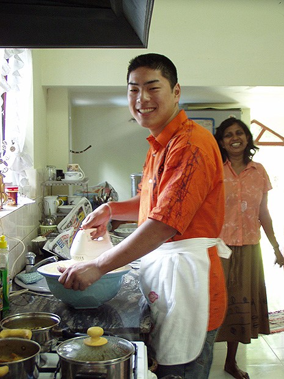

「スリランカという国に興味を抱いていて、英語も勉強したいと思っていて、さらにいくつかのボランティア活動ができて良さそうだと思ったので参加しました。とても迅速で、丁寧な対応で満足しています。
現地では不安になることはありませんでした。
英語レッスンは、使う教科書が比較的簡単でしたが、自分が簡単と思う割にはできなかったので、助けられました。宿題は特になかったです。
教科書のレッスンは、先生も僕も好きじゃないので、先生のいつも持ってくるNEWSPAPERをよんで、『人生の楽しみ方』『宗教』『恋愛』など、興味のあるものを先生の解説付きでやることが主になっていました。
僕もそのレッスンがとても好きで、自然と英語にもどんどん慣れていったのだと思います。
低開発村は、TFGスタディーツアーでも訪れました。TFGが、自立促進の支援を続けているおかげで農場やガーデンがうまくいき、収入を得ているんだなとかんじました。
低開発というから、かなりひどいものを想像していましたが、実際にはそこまでひどい生活には見えませんでした。
スリランカに行く前は、戦争中だし人びとの心に暗い影響を及ぼしているのだろうな、と思ったが、実際には人びとは明るく威勢のいい人や、優しい人が多いなと思いました。